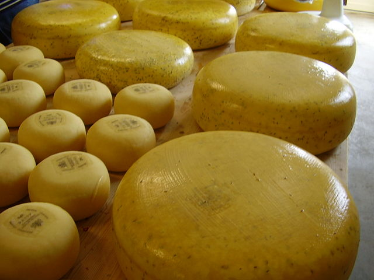
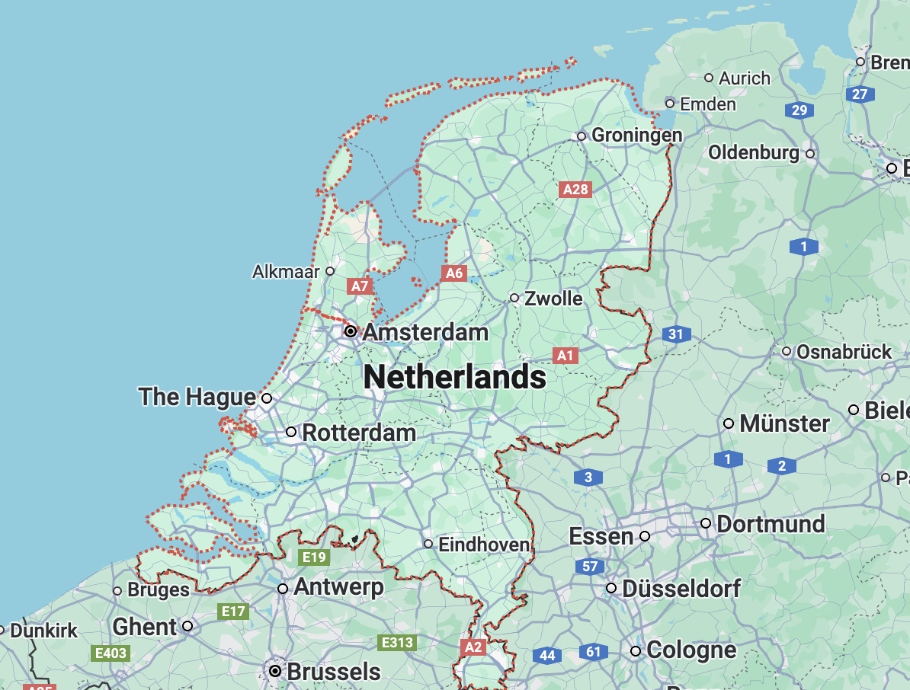
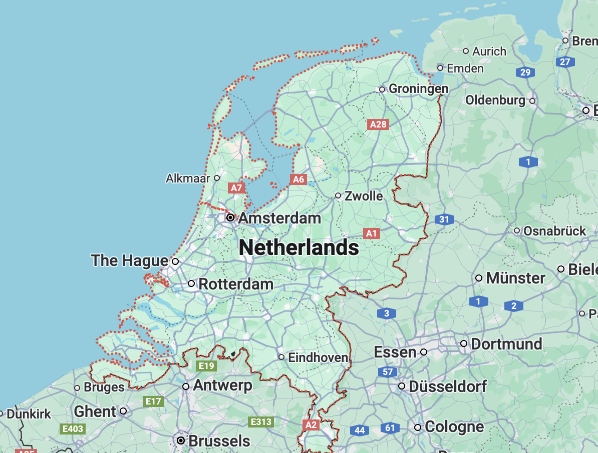
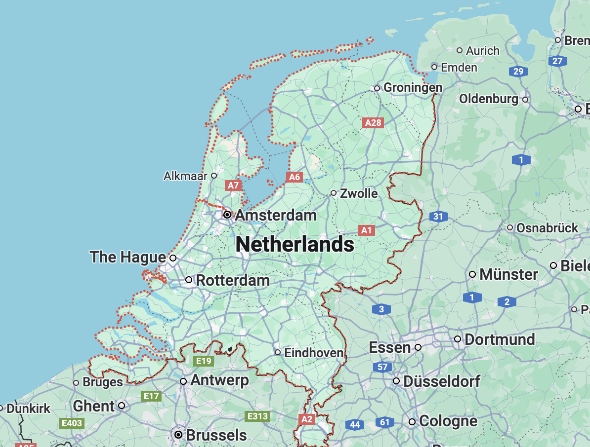

- Home
- Gouda


 

GOUDA
- Region: Netherlands
- Milk: Cow
- Texture: Hard
Gouda is a hard cheese that originates from the city of Gouda in the Netherlands. Typically made from pasteurized cow’s milk, gouda comes in a wide range of flavors and textures. Aged gouda has a rich and complex flavor while young gouda is creamy and mild. The cheese is used in many household staple dishes such as soups, sandwiches and mac cheese.
More Info